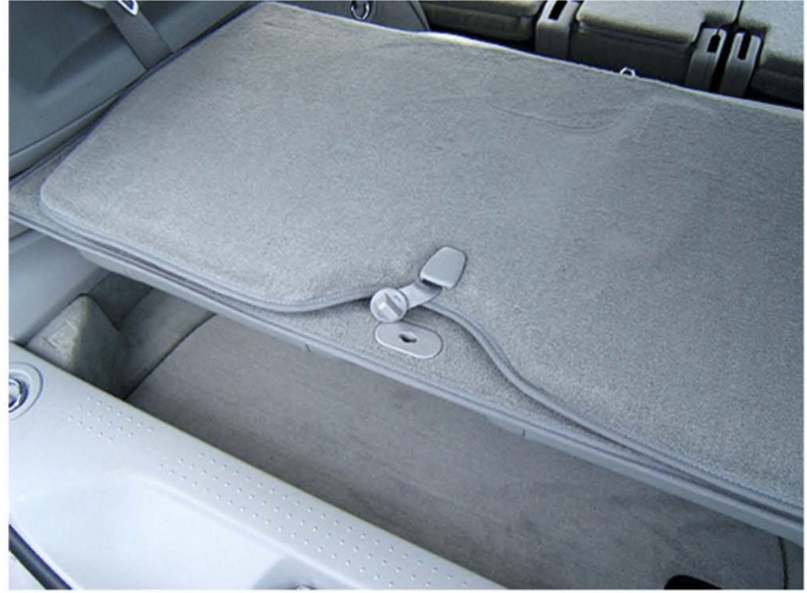
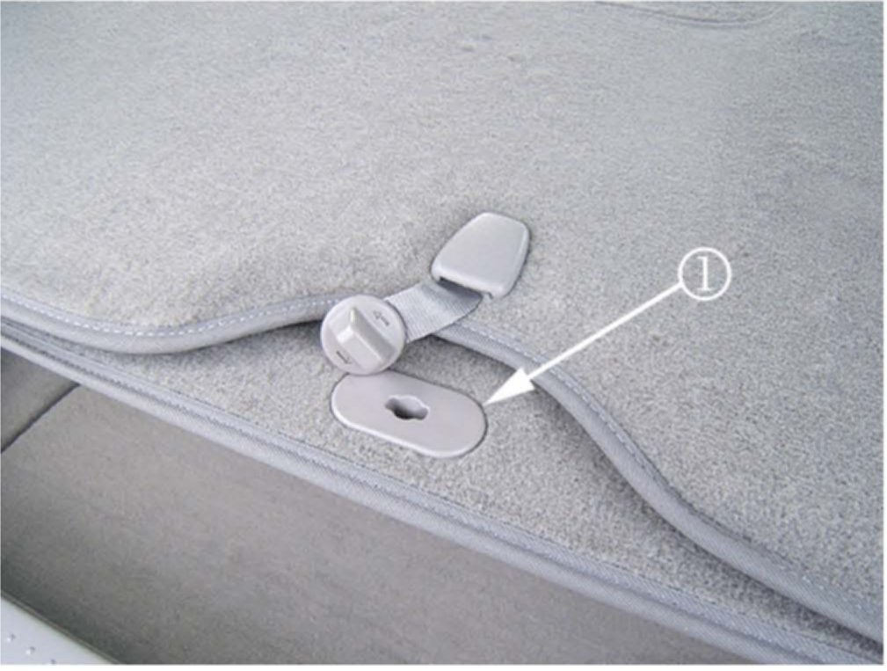
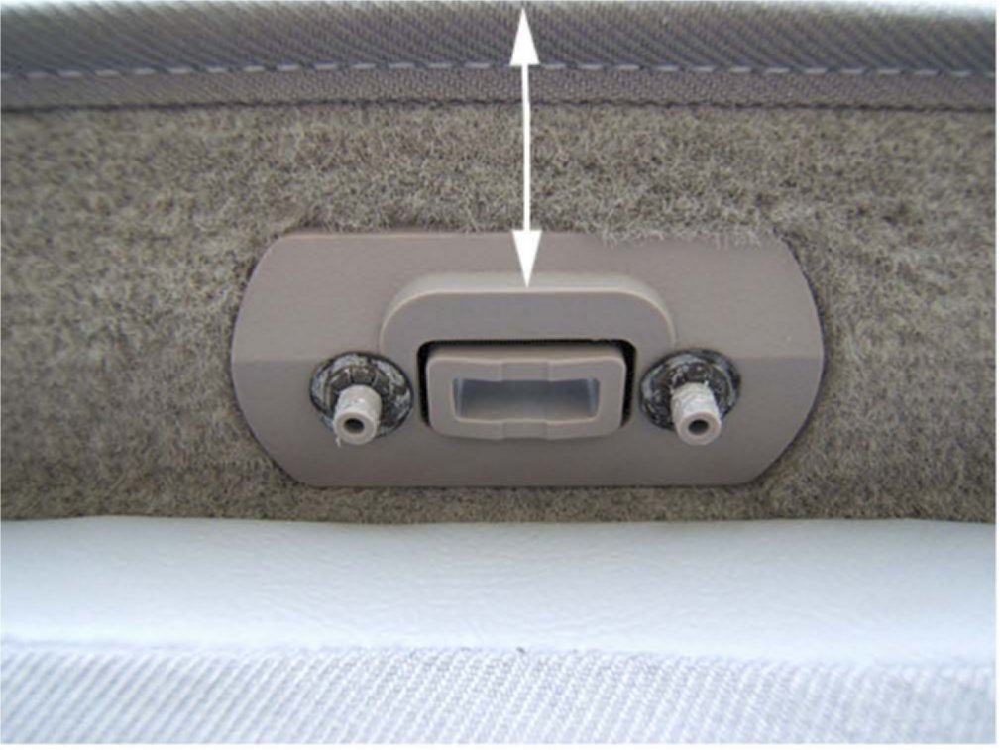
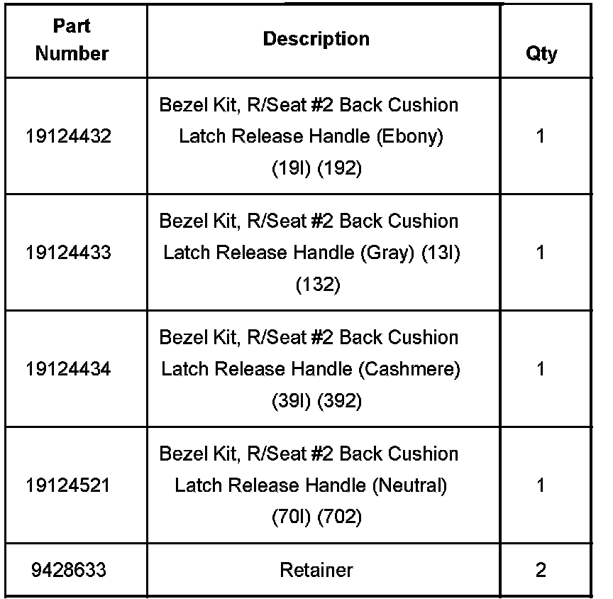
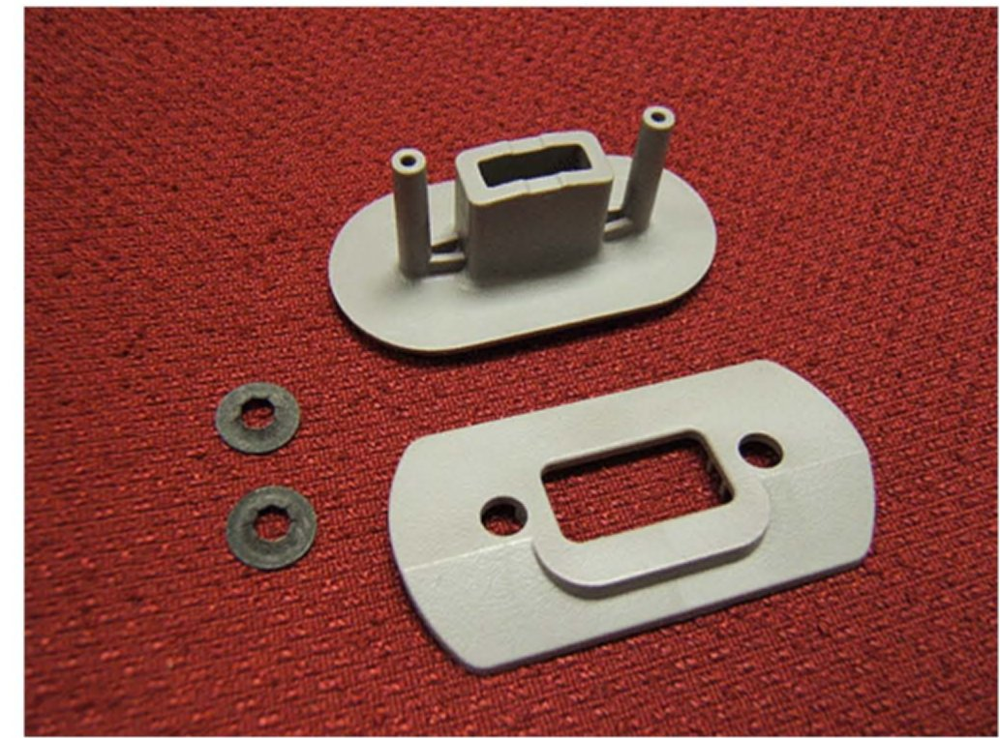
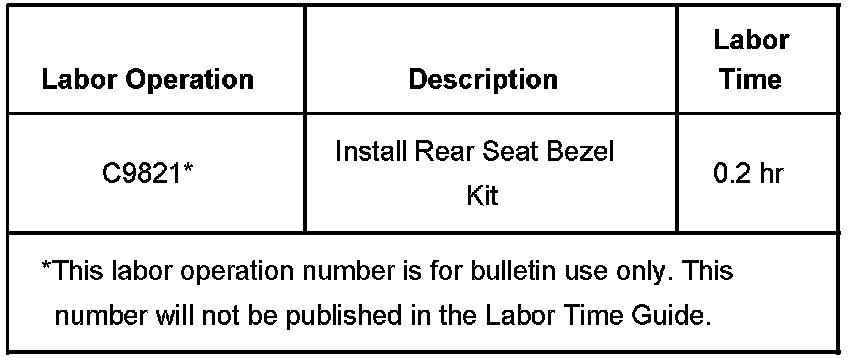

Interior - Third Row Seat May Not Fold Up or Down
Bulletin No.: 07-08-50-021Date: December 11, 2007
TECHNICAL
Subject:
Third Row Seat May Not Fold Up or Down, Seat Back Panel May Not Stay Folded and Latch Bezel is Separated or Loose (Install Seat Bezel Kit)
Models:
2004-2008 Cadillac SRX
with Rear Seat Flexible Configuration (RPO AM0)
Condition
Some customers may comment that the third row seat may not fold up or down. Other customers may comment that the third row seat back panel may not stay folded and the latch bezel is separated or loose.
Cause
The seat back latch bezel may separate at the location where the two bezel pins are heat staked together.
Correction
Install the seat bezel kit using the steps below.
Open the rear lift gate.
Press the unlock button on the key FOB three times to enable the power folding seat.
If the third row seat is stored in the down position, then fold the load floor panel back toward the rear of the vehicle. This will allow the seat to be folded up or down.

Using the power seat button position the third row power seat halfway up through the seat cycle. The third row seat back panel should be in the elevated and horizontal position as shown in the illustration above.
Remove the existing seat back latch bezels if still attached (separate the heat stakes on the bottom side of the bezel).

Install the key lock side of the latch bezel (1) through the top of the seat back panel with the two plastic pins in the down position.

Install the bottom piece of the latch bezel with the tapered edge toward the top edge of the rear seat back panel as shown in the illustration above.
Install the two metal retainers, P/N 9428633, over the ends of the two plastic pins.
Tip
An 8 mm deep socket or nut driver may be used to fully seat the retainers.
Fully seat the two retainers.
Press the unlock button on the key FOB three times to enable the power folding seat.
Return the folding seat back to its original position.
Close the rear lift gate.

Parts Information
The two retainers are not included in the bezel kit.

Order one bezel kit by the vehicle's interior color code and two retainers as shown in the illustration above.
Warranty Information

For vehicles repaired under warranty, use the table.

Disclaimer